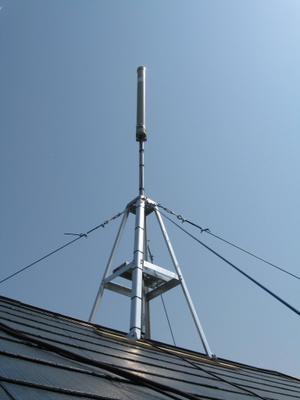

3年以上使った釣り竿＋ATUの垂直HFアンテナを下ろしました。Uボルト等金具類は錆びている一方，釣り竿自体はまだまだいけそうな感じでした。
7MHz用の新しいアンテナを何にしようか悩んだのですが，コンパクトなものが欲しかったので思い切ってEHアンテナを選択しました。FR Radio Labから出ている拡張バンド対応，耐入力200Wのものです。EHアンテナはSWRの調整が結構難しいとの情報をあちこちで聞いていたのですが，そんな苦労もたまには良いかと安易に決定してしまいました。

{kind=link}
私は和文CWを主にやりたいため7.020MHz付近と，7.110MHz付近を狙い，SWR最小点をその中間の7.065MHz付近に持って行きたいのです。EHアンテナ付属の調整棒で周波数調整すると，最小点(SWR=1.9)がうまく7.060MHzあたりに来てくれました。しかし，最小値が1.9では，その周波数ピンポイントでやっと使える程度です。さらに全体のSWRを下げるような調整が必要ですが，EHアンテナの場合にはこれがやっかいなようです。同軸ケーブルそのものの長さや，同軸とマストなど金属構造物との接触部分の長さ，シャックまでの引き回しを変えるという泥臭い方法で調整をするしかないようなのです。
まず同軸ケーブルの長さを今の15mから10mにしてみました。シャックが2階にあるので，10mでもまだ余る位なのですが，これが大失敗。いきなりバンド全体でSWR>4で全く使い物になりません。同軸と，マストやルーフタワーとの接触部分の長さを色々変えても全く改善しません。確かに1/4λ長付近なので，高SWRになって当たり前と言えば当たり前かしら。
この時，手持ちのアンテナチューナー兼SWR計（DAIWA CNW419）をリグとアンテナの間に入れると，SWRが極端に下がる現象がありました。この時チューナーはスルーでSWR計としてのみの使用です。しかし，それをはずして別のSWR計やリグ内蔵の簡易SWR計だけで測定するとまた3以上にあがります。CNW419の回路図を見ると，チューナースルーでも C がいくつかパラに入っているので，このせいでマッチングが若干変わったのでしょう。しかし，ダイポールなんかではSWR計を入れるだけでこんなに変化は無いと思うので，同軸の取り回しで変化することと合わせて考えると，この点EHというのはかなり繊細なのでしょうか。
同軸を短くして悪化したので，今度は逆に長くしてみようとさらに手持ちの10mを追加，計20mとしてみたところこれが正解。7.010Mhz付近でSWR=1.1以下になりました。これも同軸長が1/2λに近くなったからでしょうか。最低点の周波数が下がりましたので，再度調整棒で周波数調整して7.065MHz付近に持って行きました。
私の家で20mの同軸を使うと屋根上のアンテナから一度地面まで下りて，そこでとぐろを巻いてから2階シャックにまた上がる形になります。そこで地面に接する部分を直線的に地中に埋めるような工夫をして最終的に，7.020MHzと7.110MHzでSWR=1.2，全バンド幅でSWR=1.9以内になっています。
{kind=link}
性能の第一印象としては，大きさの割に随分とよく聞こえると思います。ノイズが減ったようにも思います。大きさ的にも，風でブンブンしなっていた釣り竿に比べ，ご近所様への威圧感がかなり減ったと思います。
今後，さらに飛び/受け具合の様子を見ると共に，天候（雨，風，湿温度）によるSWRの変化を見てみたいと思います。